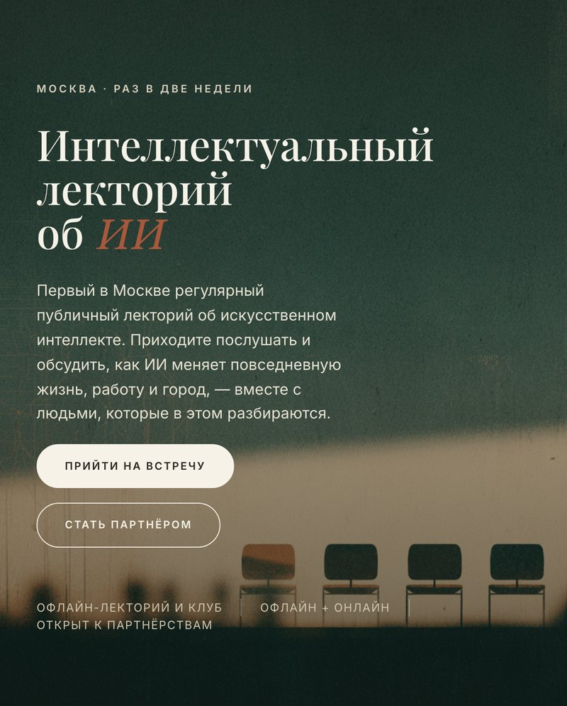
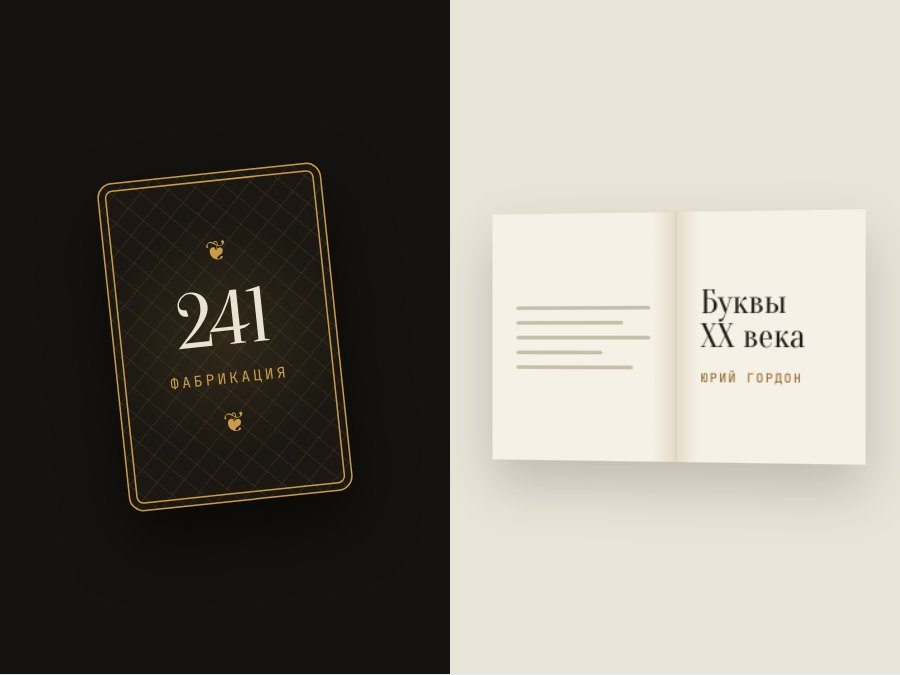
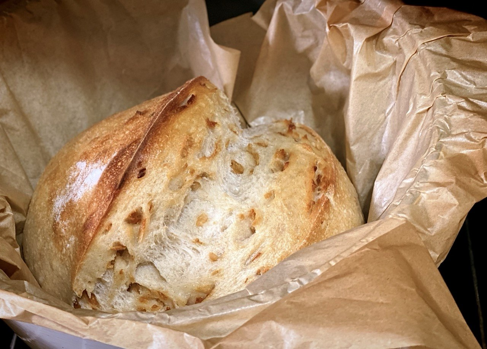

Портфолио · code/
Код, идеи
и работающие вещи
Делаю сайты, лендинги и небольшие интерактивные штуки — от идеи до готового результата.
Заказать проект себе
5 проектов
7 гайдов
1 бот
P
Проекты
05
Сайты, лендинги и исследования с ИИ — для заказчиков и для себя. Все работают: открывайте, листайте, пробуйте.

Лендинг · готовоP.01 Лекторий Первый в Москве регулярный лекторий об ИИ: встречи раз в две недели, запись на встречу, разделы для партнёров и спикеров. 14.08.2026↗
Кейс · готовоP.02 «О, Париж!», «Буквы XX века», «Мастер и Москва» 16 месяцев исследований с ИИ для Юрия Гордона: карты, книга, инфографика. Метод, брифы, отчёты, интерактивная карта и игры. 16.09.2026↗ Кейс · готовоP.03
Архив шрифтов: каталог 2288 файлов
Образец каждого шрифта, справка об авторах 1990-х, примерочная для своего текста и скилл для ИИ.
22.09.2026↗
Кейс · готовоP.03
Архив шрифтов: каталог 2288 файлов
Образец каждого шрифта, справка об авторах 1990-х, примерочная для своего текста и скилл для ИИ.
22.09.2026↗
P.04

Сайт-гайд · готово Хлеб на закваске Левито Мадре Пошаговый гайд по выпечке на закваске: план на три дня, чек-лист и список покупок со ссылками. P.05 Интерактив · готово Чек-лист путешественника Список вещей в поход или поездку: 10 категорий, фильтр «осталось / готово», помнит отмеченное и работает без интернета.
G · B
Гайды, статьи, бот
08
Здесь лежит то, чем я пользуюсь в работе: настройки, которые ставлю себе, инструменты, собранные под свои задачи, и промпты, доведённые до рабочего состояния. Всё бесплатно и открыто — берите и применяйте.
G.01
Гайд
Как настроить ассистента в Claude
Раз в неделю сам приносит отобранное по вашей теме и отбрасывает лишнее. Программировать не нужно.
15.09.2026↗
G.02
Гайд
Claude Code: инструкция по установке
От подписки до первого рабочего запроса за 15–25 минут — шаг за шагом, с VPN и проверкой, что всё работает.
14.09.2026↗
G.03
Гайд
Вакансии из Telegram через Claude Code
Не нужно листать десятки каналов: подходящие вакансии приходят каждый день. Без вас ничего не отправится.
28.07.2026↗
G.04
Гайд
Настройки ChatGPT
Вставляете в профиль — и ChatGPT сам уточняет задачу, отвечает как эксперт и проверяет свою логику.
11.06.2026↗
G.05
Статья
Режим «Запланировано» в ChatGPT
Новости про ИИ собираются сами — вам остаётся проверить готовый текст. Мой опыт и настройка, чтобы повторить.
23.09.2026↗
G.06
Промпты
Промпты для дизайн-аудита
Свежий взгляд на свою страницу: ИИ находит ошибки и объясняет, почему они мешают и как их исправить.
20.08.2026↗
G.07
Гайд
Созвон в Контур.Толке: ролик для соцсетей
Эфир с экспертом или разбор сразу становится роликом для YouTube, VK или Reels — без недели монтажа.
17.09.2026↗
B.01
Telegram-бот · работает
SafeOut: бот безопасности для свиданий
Спокойнее идти на встречу с незнакомцем: бот хранит данные о свидании и сам поднимет тревогу, если вы пропали.
27.08.2026↗